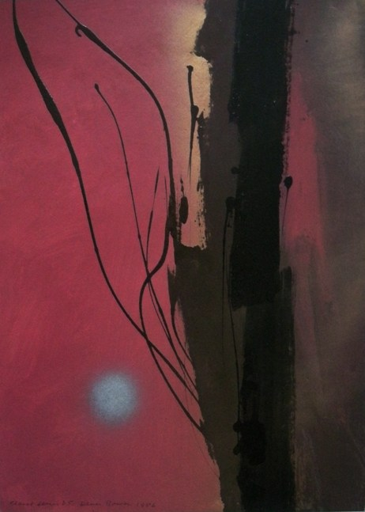

Denis Bowen
1921 – 2006
Artist Biography
Denis Bowen was born in Kimberly, South Africa of Welsh parentage but left for England as a child. He studied at the Royal College of Art from 1946-50, where teachers included Rodrigo Moynihan, John Minton and Carel Weight. Bowen soon made his name as a leading experimental artist; in 1952 with other members of the ICA he founded the Free Painters’ Group and from 1956-66 he directed the New Vision Centre, initially with Frank Avray Wilson and Halima Nalecz. This became the focal point in London for work of advanced artists from Europe and elsewhere. From 1969-1972 he taught at Victoria University, British Colombia and in later life he was a leading light in Celtic Vision which he co-founded in 1982. Bowen showed widely, at the Redfern Gallery and elsewhere, and major late career retrospectives included Belgrave Gallery, London in 2001, Blyth Gallery, Imperial College in 2002 and Rome Museum of Modern Art in 2006. His work is held by the Tate Gallery, Victoria and Albert Museum, British Museum and many regional collections in the UK. It is also in public collections in Australia, USA, Canada, Italy, Poland, Macedonia, Israel and elsewhere.

Planet Series D5, 1986